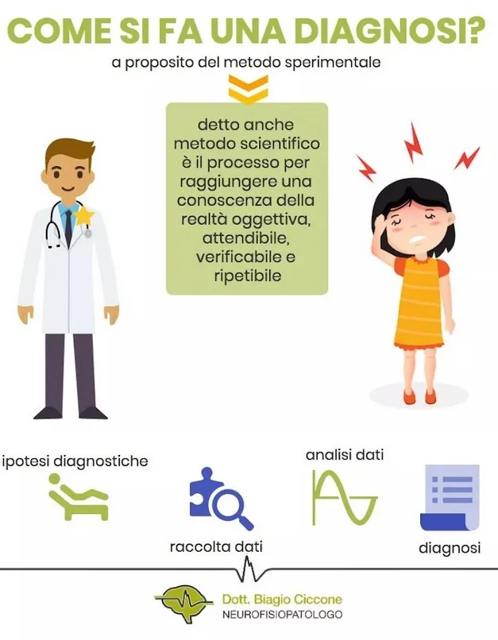

Ma come fa il Medico a esprimersi con una diagnosi certa per quel paziente che sta valutando?
Segue un metodo! Il metodo metodo scientifico o metodo sperimentale, che è il processo necessario per raggiungere una conoscenza della realtà oggettiva, affidabile, verificabile e ripetibile quindi condivisibile.
Esso consiste, da una parte nella raccolta di dati sulla base delle ipotesi diagnostiche più attendibili; dall’altra nell’analisi rigorosa dei dati raccolti al fine di raggiungere l’obiettivo della diagnosi corretta.
Il grande clinico bolognese dell’ottocento Augusto Murri fu l’autore di un fondamentale metodo diagnostico che è la fusione tra quello sperimentale di Galileo e il metodo logico induttivo.
Murri è considerato uno dei più grandi innovatori in campo medico del suo tempo, promotore di una clinica pura, incentrata sulla ricerca diretta sul malato come individuo, sui suoi sintomi e sulle cause della malattia.
Tale ricerca deve essere attenta e scrupolosa, basata sulle conoscenze del medico e sulla sua capacità di formulare ipotesi diagnostiche e poi di confutarle, finchè non ne rimanga una non confutabile e che corrisponde alla diagnosi più giusta possibile
